Luminous reproduce la música que ya tienes en tu computadora. No necesitas una biblioteca para empezar.
Reproduce algo ahora
•
En Reproduce música, elige Abrir archivos o Reproducir una carpeta.
•
O arrastra archivos y carpetas a la ventana.
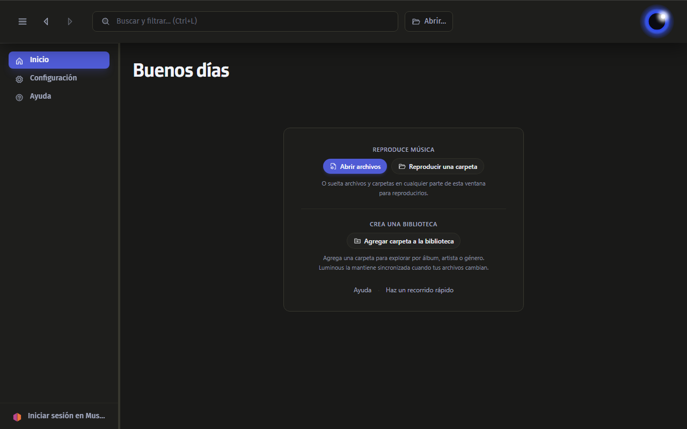
Crea una biblioteca
1
Elige Agregar carpeta a la biblioteca en Crea una biblioteca, o agrega una carpeta en Configuración → Fuentes.
2
Luminous la analiza y después sigue vigilándola. Los archivos nuevos, movidos o renombrados se actualizan solos.
3
Explora tu música en Colección, en la barra lateral.
Inicio
•
Inicio muestra un resumen al día de tu biblioteca y de lo que escuchas.
•
Álbumes más escuchados ordena los álbumes por los minutos reproducidos esta semana. Una insignia de Reingreso marca un álbum que vuelve a la lista.
•
Define con qué día empieza la semana en Comenzar la semana en, dentro de Configuración → General.
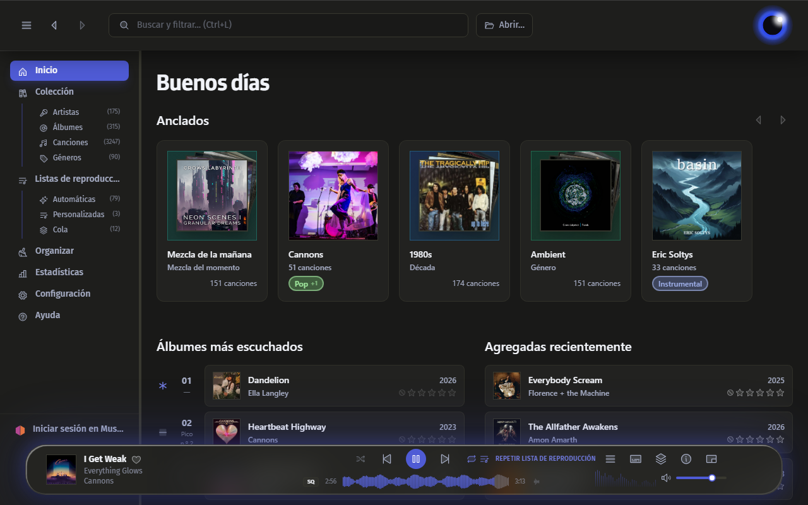
Haz el recorrido
•
¿Es tu primera vez en Luminous? Un breve recorrido te presenta la interfaz.
•
Vuelve a verlo cuando quieras con Reiniciar el recorrido por las funciones, en Ayuda.
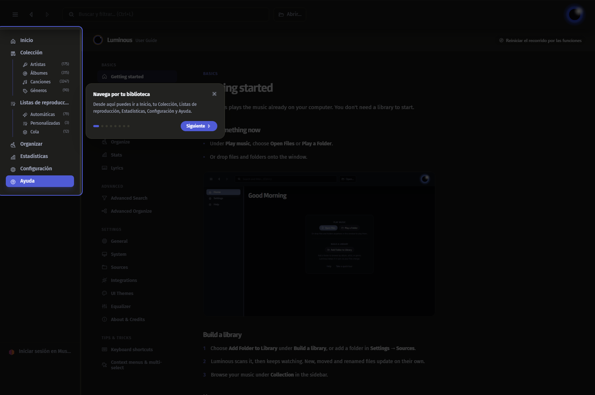
Conceptos básicos
Tu colección
Colección, en la barra lateral, tiene cuatro vistas: artistas, álbumes, canciones y géneros. Cada una muestra un total y un control de orden en la parte superior derecha.
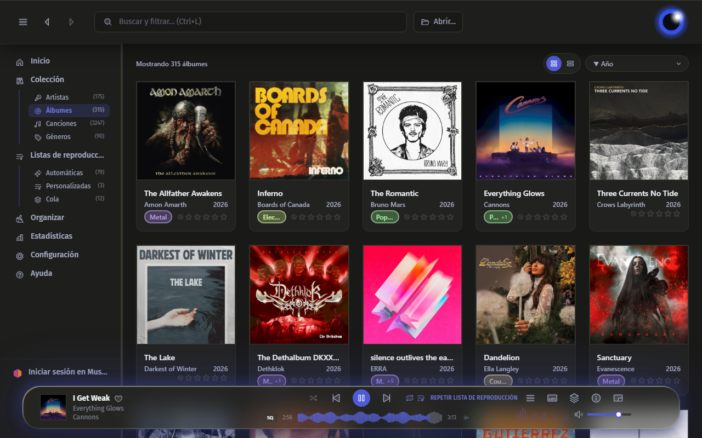
Canciones
•
Consulta toda tu biblioteca como una tabla ordenable.
•
Haz clic con el botón derecho en el encabezado de cualquier columna para elegir los campos que se muestran, como N.º de reproducciones y N.º de omisiones.
•
Arrastra el borde derecho del encabezado de una columna para cambiar su ancho. Haz doble clic en el borde para restablecerlo.
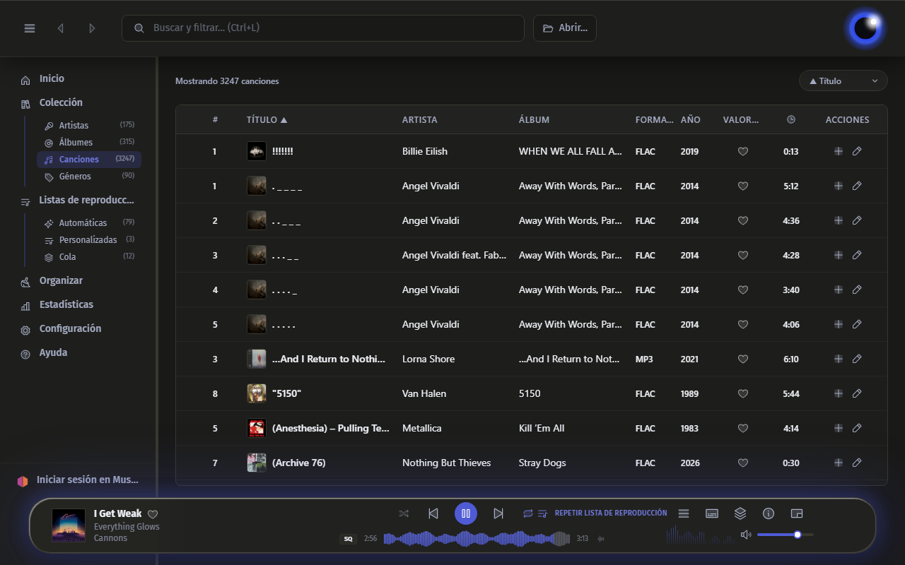
Géneros
•
Cada género es una tarjeta. Su total de canciones incluye sus subgéneros.
•
Arrastra la etiqueta de un subgénero a otra tarjeta para moverlo, o arrastra el asa de una tarjeta para convertir todo el género en subgénero.
•
Haz clic con el botón derecho en una etiqueta o en el encabezado de una tarjeta para Cambiar nombre, Ascender a género de nivel superior o Eliminar el género de todas las canciones.
•
Haz clic en la muestra de color de una tarjeta para cambiar su color.
•
Haz clic en una tarjeta o etiqueta para abrir su lista automática.
•
Las etiquetas que agregas en las páginas de artistas tienen sus propias tarjetas en Etiquetas de artistas, encima de los géneros de las canciones.
•
En la parte superior derecha, alterna entre la vista de tarjetas y la de filas, y ordena por nombre o por número de canciones.
•
Las canciones sin género se agrupan en Sin género.
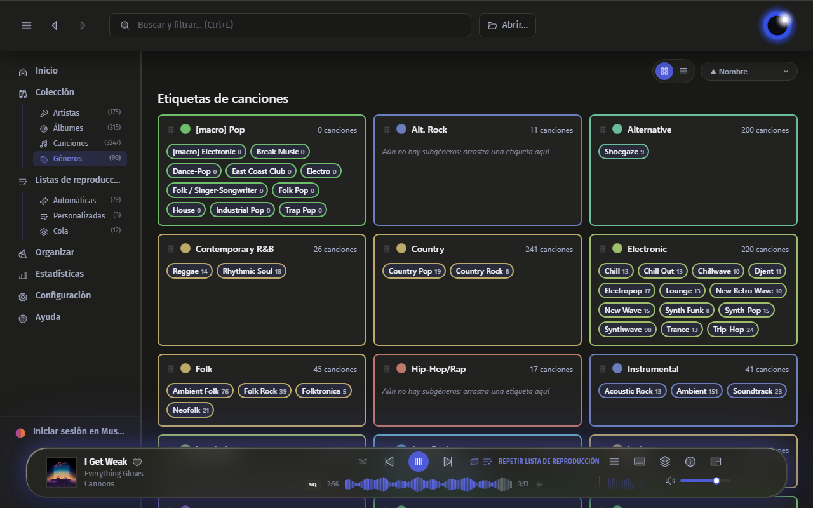
Álbumes
•
Abre un álbum para ver sus pistas. El panel lateral muestra el formato, la tasa de bits, la frecuencia de muestreo y el volumen del archivo que se reproduce.
•
Haz clic en + para agregar el álbum o una canción a la lista activa (la cola, salvo que elijas otra).
•
Haz clic en el lápiz para abrir Editar etiquetas del álbum y corregir de una vez el título, el artista, el género o el año de todas las pistas.
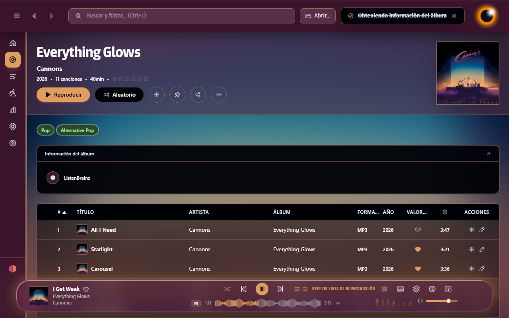
Editar etiquetas
•
Haz clic en el lápiz de una pista para abrir Editar etiquetas de la canción.
•
Artista, Artista del álbum, Compositor y Género admiten varios valores. Presiona Intro después de cada uno.
•
Quitar carátula elimina la portada incrustada de la pista.
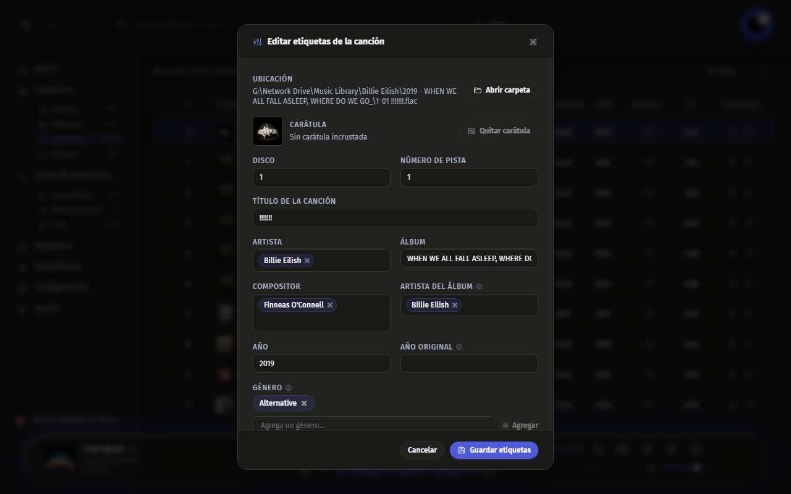
Artistas
•
La página de un artista muestra sus lanzamientos en Discografía: álbumes, EP y sencillos, y luego las listas de reproducción donde aparece.
•
Haz clic en Editar para agregar una biografía, un sitio web y enlaces como Bandcamp, Spotify o Instagram. Aparecen en el panel Acerca de del artista.
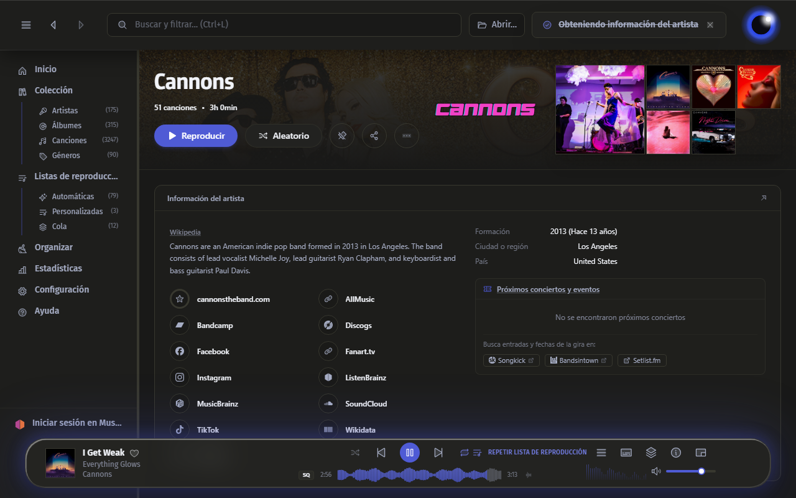
Conceptos básicos
Búsqueda y exploración
Una sola barra de búsqueda encuentra canciones, álbumes, artistas y listas de reproducción.
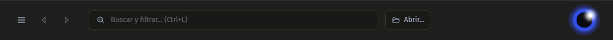
1
Presiona CtrlL o haz clic en la barra de búsqueda.
2
Empieza a escribir. Los resultados aparecen sobre la marcha.
3
Usa las flechas de atrás y adelante junto a la barra de búsqueda para volver sobre tus pasos.
•
Haz clic en Abrir… (CtrlO) para reproducir archivos de cualquier lugar de tu computadora.
•
Haz clic en el logotipo de Luminous para activar o desactivar su pulso al ritmo de la música.
La barra del reproductor aparece en la parte inferior de la ventana mientras suena la música.
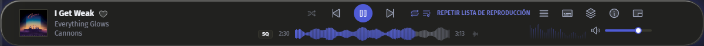
Barra del reproductor
•
Haz clic en la carátula para abrir el modo inmersivo (Ctrl2).
•
Haz clic en el corazón o en las estrellas para valorar la canción. Elige el estilo en Configuración → General.
•
Haz clic en la forma de onda para saltar a otro punto de la canción. El botón junto a ella cambia a bandas de frecuencia: azul para graves, ámbar para medios y blanco para agudos.
•
Aleatorio recorre Desactivado, Todo y:
– Dentro del álbum: los álbumes en orden y las pistas de cada uno en orden aleatorio.
– Álbumes: los álbumes en orden aleatorio y las pistas en orden.
– Artistas: un artista a la vez, elegidos al azar.
•
Repetir recorre Desactivado, Canción, Álbum y Lista de reproducción.
•
Los botones de la derecha abren:
el menú de la canción
la letra
la cola
el panel de información (CtrlI)
el minirreproductor (CtrlM)
•
Las teclas multimedia y los controles multimedia del sistema funcionan aunque Luminous no esté en primer plano.
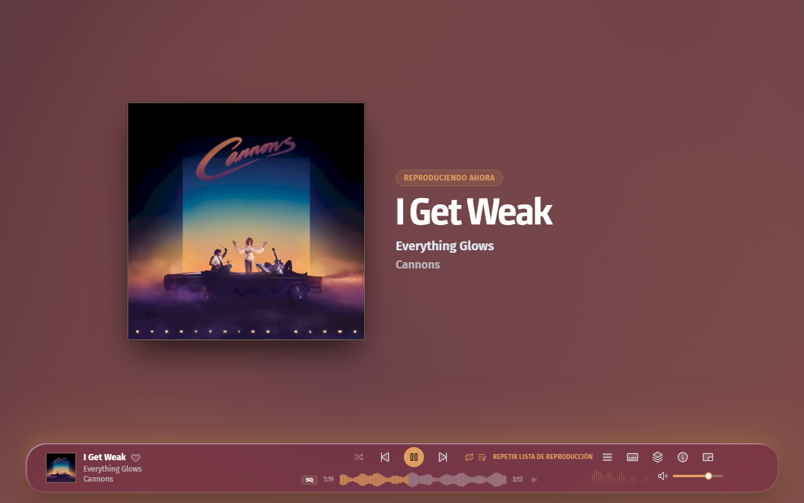
Minirreproductor
•
Pasa el cursor sobre el minirreproductor para mostrar sus controles y valorar la canción.
•
Arrastra su borde superior para moverlo.
•
Usa el botón de letras para alternar entre la carátula y la letra en vivo.
•
Haz clic en Restaurar la ventana completa (CtrlM), abajo a la derecha, para volver.
En reposo
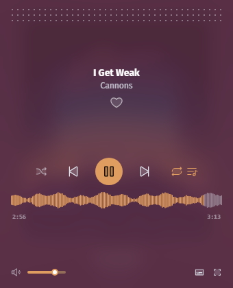
Al pasar el cursor
Conceptos básicos
Listas de reproducción
Hay tres tipos de listas de reproducción:
•
Personalizadas: las armas tú, arrastrando canciones.
•
Inteligentes: defines reglas, como «Género es Rock y Año es posterior a 2015», y Luminous las mantiene al día.
•
Automáticas: listas por género, década y BPM que Luminous crea por su cuenta, con hasta 25 canciones que se renuevan a diario. Cada una aparece cuando coinciden 25 canciones. Haz clic en Actualizar lista de reproducción para obtener una selección nueva.
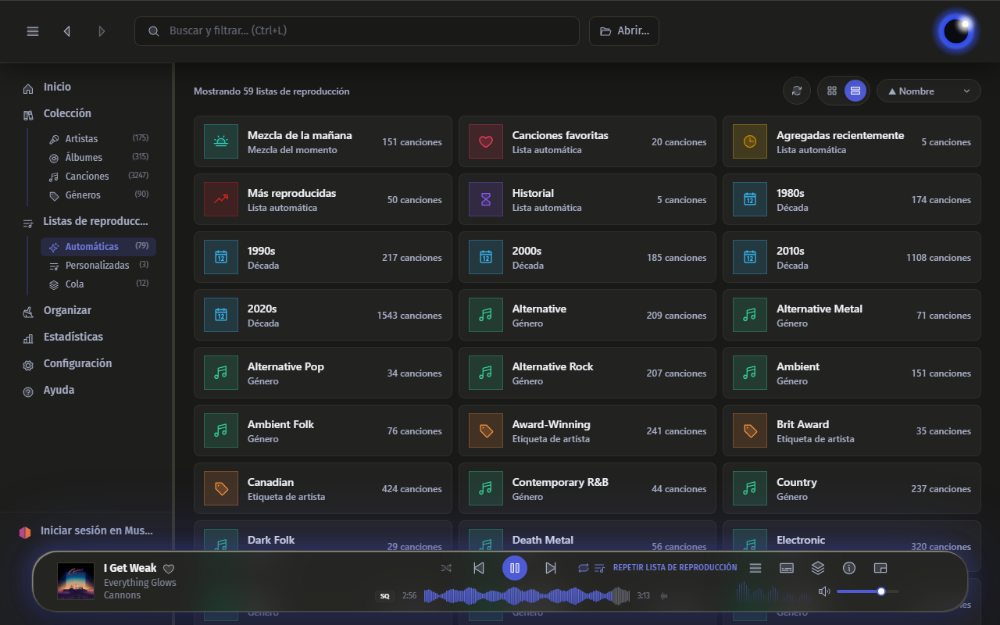
Agregar canciones
•
Haz clic en + junto a una canción o un álbum para agregarlo a la cola.
•
Para agregarlo a otra lista de reproducción, haz clic antes en Activar en esa lista.
•
Arrastra archivos o una carpeta a la ventana para reemplazar la cola y reproducirlos. Mantén presionada la tecla Mayús para agregarlos al final.
Listas inteligentes
•
Haz clic en Nueva lista inteligente, agrega reglas y luego ponle nombre y guárdala.
•
Usa Editar reglas para cambiarlas más adelante.
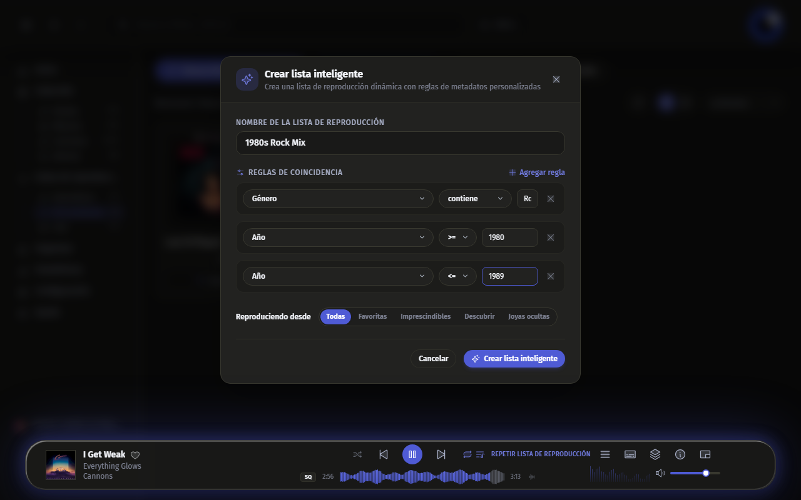
Listas por BPM
Las listas por BPM usan la etiqueta BPM de cada canción. Luminous no mide el tempo, por lo que las canciones sin etiqueta BPM no se incluyen. Crea tus propios rangos con una lista inteligente.
Categoría
Rango de BPM
BPM lento
60–90
BPM moderado
90–115
BPM rápido
115–130
BPM de alta energía
130–150
BPM extremo
150+
Administrar una lista de reproducción
•
Haz doble clic en el nombre para cambiarlo.
•
Arrastra las filas para reordenarlas. Selecciona varias para moverlas juntas.
•
Haz clic en el encabezado de una columna para ordenar, o escribe en el cuadro de filtro para acotar la lista.
•
Usa los botones de quitar para eliminar canciones duplicadas o no disponibles, y Vaciar lista de reproducción para dejarla vacía.
•
Haz clic con el botón derecho en el encabezado de una columna para agregar la columna Fecha de incorporación.
Importar y exportar
•
Importa o exporta listas de reproducción .m3u, .m3u8, .pls y .xspf.
•
Al exportar, elige Usar rutas de archivo relativas (portátiles) para que la lista siga funcionando en otra carpeta o en otra computadora.
Conceptos básicos
Estadísticas
Estadísticas muestra lo que escuchas, calculado en tu computadora y sin enviarse a ningún lado.
•
Elige Últimos 7 días, Últimos 28 días o Último año.
•
Consulta tus artistas, álbumes, canciones y géneros más escuchados. Haz clic en uno para abrirlo.
•
El mapa de calor muestra los minutos escuchados por día, con tu Racha actual y tu Racha más larga.
•
Hora del día muestra cuándo escuchas más.
•
Para dejar algo fuera, haz clic con el botón derecho en cualquier lugar donde aparezca y elige No incluir en las estadísticas.
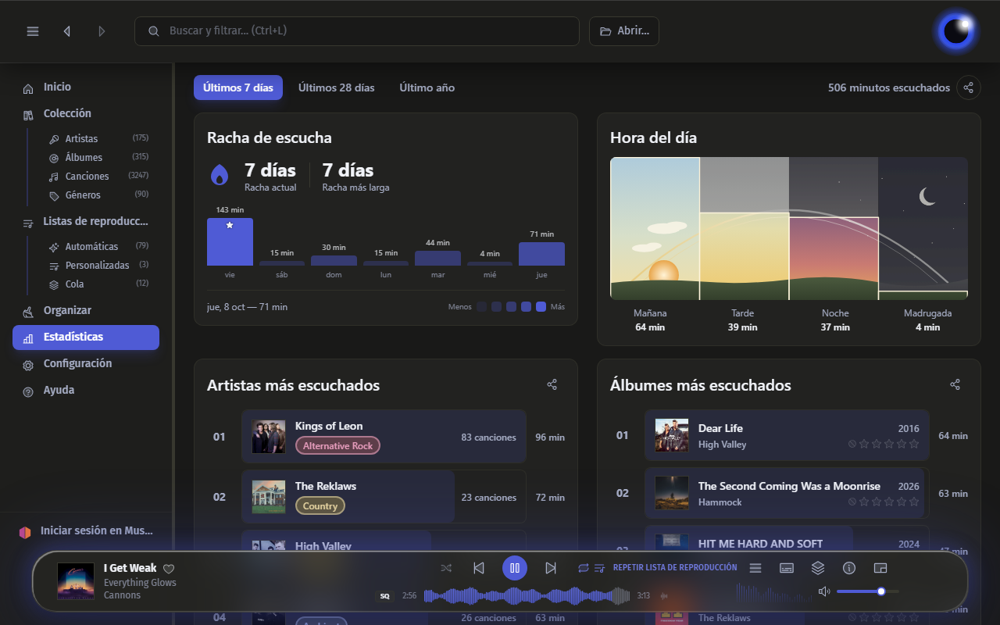
Conceptos básicos
Letras
Activa Letras en la barra del reproductor. La línea actual se resalta al compás de la música.
•
Haz clic en una línea para saltar a ella.
•
Volver a obtener busca la letra de nuevo.
•
Editar corrige el texto o la sincronización.
•
La letra sin marcas de tiempo se muestra como texto sin formato.
•
Si es una pista instrumental, elige Marcar como instrumental para que Luminous deje de buscar.
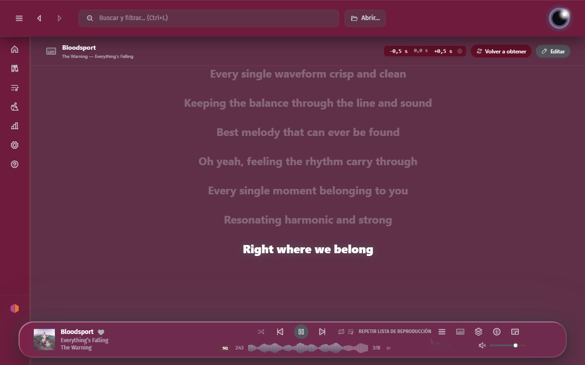
Avanzado
Búsqueda avanzada
Escribe términos field:value en la barra de búsqueda para filtrar toda tu biblioteca. Por ejemplo, genre:rock rating:>=4 encuentra canciones de rock con 4 estrellas o más.
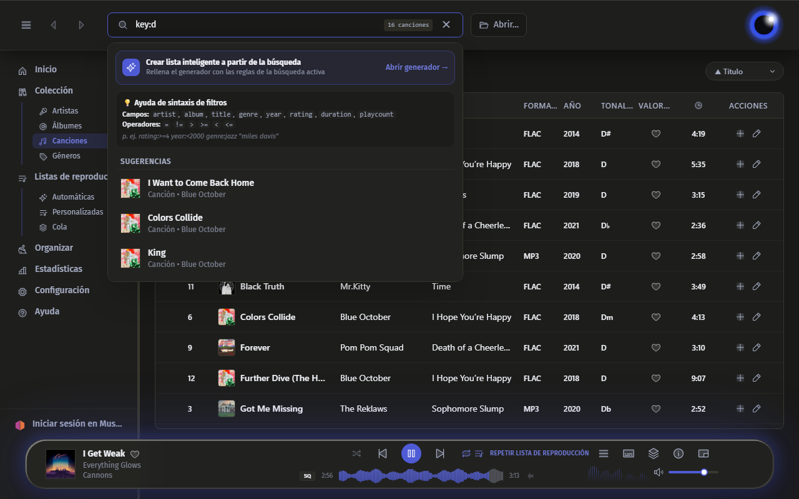
Sintaxis
•
Un campo de texto sin operador significa contiene: genre:rock coincide con cualquier género que contenga «rock».
•
Un campo numérico sin operador significa exactamente: year:1994 coincide solo con 1994.
•
Si hay varios términos, todos deben cumplirse: rating:>=4 year:<2000 genre:rock.
•
Las palabras sin dos puntos buscan en el título, el artista y el álbum: rating:>=4 "tom cochrane".
•
Pon entre comillas los valores con espacios: artist:"tom cochrane". Los nombres de campo no distinguen mayúsculas de minúsculas.
Operadores
Símbolo
Significado
=
es igual a
!=
no es igual a
>
mayor que
>=
mayor o igual que
<
menor que
<=
menor o igual que
(ninguno)
contiene (texto) / es igual a (numérico)
Campos
Todos los campos funcionan en la barra de búsqueda y como reglas de lista inteligente.
Campo (alias)
Tipo
Coincide con
artist
texto
Artista (si no hay, el artista del álbum)
artist_tag
texto
Etiqueta de artista
album_artist
texto
Solo el artista del álbum
album
texto
Título del álbum
title
texto
Título de la pista
genre
texto
Género
composer
texto
Compositor
key / initial_key
texto
Tonalidad (p. ej., «D», «Am», «D♭»)
bpm
número
Pulsos por minuto
year
número
Año de lanzamiento
originalyear / original_year
número
Año de lanzamiento original (frente a la reedición)
rating / stars
número
Valoración en estrellas, de 0 a 5
playcount / plays
número
Veces reproducida
skipcount / skips
número
Veces omitida
lastplayed / last_played
número
Marca de tiempo de la última reproducción (segundos Unix)
added
número
Marca de tiempo de incorporación (segundos Unix)
track / track_number
número
Número de pista
disc / disc_number
número
Número de disco
bitrate
número
Tasa de bits (kbps)
samplerate / sample_rate
número
Frecuencia de muestreo (Hz)
bitdepth / bit_depth
número
Profundidad de bits
channels
número
Número de canales
compilation
0/1
Indicador de recopilación
duration / length
duración
Duración de la pista (ver abajo)
duration acepta segundos (duration:>180), MM:SS (duration:>3:30) o H:MM:SS (duration:<1:02:03).
Guardar una búsqueda como lista inteligente
Cuando tu búsqueda tenga un término field:value, haz clic en Abrir generador → en el menú desplegable. Cada término se convierte en una regla; agrega más, ponle nombre a la lista y guárdala.
Ejemplos
Objetivo
Consulta
Canciones de rock con 4 o más estrellas anteriores al 2000
rating:>=4 year:<2000 genre:rock
Canciones en la tonalidad de re
key:d
Pistas de tempo alto (120–130 BPM)
bpm:>=120 bpm:<=130
Mezcla de texto libre y campos
rating:>=4 "tom cochrane"
Solo álbumes recopilatorios
compilation:1
Pistas de más de 3:30
duration:>3:30
Avanzado
Organización avanzada
Crea tu propio patrón eligiendo Personalizado en la página de Organizar.
Variables del patrón
Combínalas con tu propio texto. Encierra una parte entre { } para omitirla cuando la pista no tenga ese valor; termínala con / dentro de las llaves para convertirla en una carpeta.
Variable
Se sustituye por
%albumartist
El artista principal del álbum
%artist
El artista de la pista
%album
Título del álbum
%disc
Número de disco
%track
Número de pista
%title
Título de la pista
%year
Año de lanzamiento
%genre
Género
%track3
Número de pista, con ceros hasta tres dígitos
%rawtrack
Número de pista tal como está en la etiqueta, sin ceros
Ejemplos
%disc-%track
2-07
Disc %disc
Disc 2
%year - %album
2019 - Reservoir
{%album/}
Agrega una carpeta con el nombre del álbum, solo si la pista lo tiene
{%disc-}%track
Omite el «1-» cuando no hay número de disco: 07 o 1-07
{%track }%title
Agrega «07 » antes del título, solo si hay número de pista
{%track-}%title
Agrega «07-» antes del título, solo si hay número de pista
Configuración
General
•
Idioma / Language: el idioma de los menús, los botones, los mensajes y esta guía.
•
Comenzar la semana en: domingo o lunes, para las listas y estadísticas semanales.
•
Estilo de valoración de canciones: un corazón, 5 estrellas o ambos.
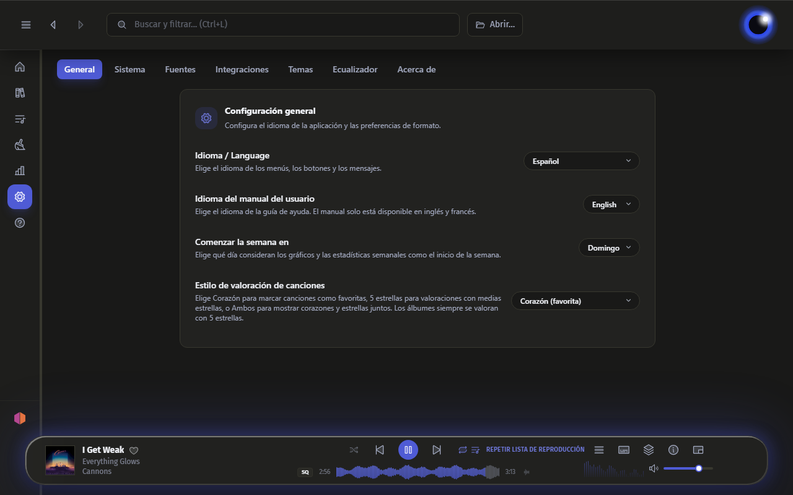
Configuración
Sistema
•
Usar Luminous como reproductor de música predeterminado (Windows): abre las Aplicaciones predeterminadas de Windows para elegir qué tipos de archivo abre Luminous.
•
Minimizar a la bandeja: al cerrar la ventana, Luminous se oculta en el área de notificación. Haz clic con el botón derecho en su icono para usar Reproducir/Pausar, Canción siguiente y Canción anterior.
•
Iniciar al iniciar sesión: abre Luminous cuando inicias sesión.
•
Exportar diagnósticos: guarda un archivo de registro con los errores y bloqueos recientes para adjuntarlo a un informe de error.
•
Ubicación de almacenamiento de datos: dónde se guardan la base de datos de tu biblioteca, la caché de carátulas y las preferencias. El ZIP de Windows funciona en Modo portátil y guarda todo en una carpeta data junto a la aplicación. Las carpetas de música de la misma unidad lo siguen cuando la unidad recibe otra letra en otra computadora. En Linux, coloca un archivo vacío llamado portable junto al AppImage para hacer lo mismo.
•
Actualizaciones: busca una versión nueva y elige qué ocurre cuando hay una. Las instalaciones de Microsoft Store se actualizan solas.
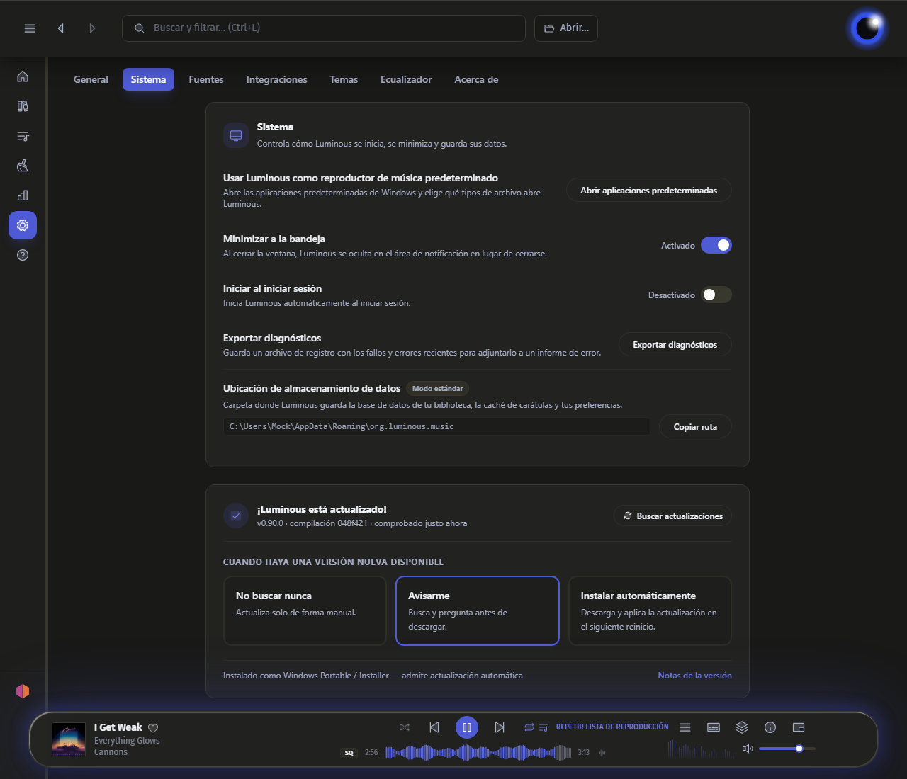
Configuración
Fuentes
Carpetas
•
Haz clic en Agregar carpeta a la biblioteca para agregar una carpeta de música. Los archivos nuevos y modificados aparecen solos.
•
Desactiva Supervisión de carpetas en tiempo real para buscar cambios solo cuando vuelvas a analizar.
•
Volver a analizar la biblioteca al iniciar revisa tus carpetas cada vez que se abre Luminous.
•
Volver a analizar la biblioteca busca cambios; Forzar análisis completo vuelve a leerlo todo.
•
Guardar las carátulas junto a tu música guarda las portadas como cover.jpg en las carpetas de álbumes y las fotos de artistas como artist.jpg. Nunca se sobrescribe el arte que ya está en una carpeta.
•
Si una carpeta aparece como no disponible porque cambió la letra de su unidad o moviste la música, haz clic en Ubicar… y elige su nueva ubicación. Las canciones conservan sus reproducciones, valoraciones y listas de reproducción.
•
Para mover una carpeta que sigue disponible, haz clic en Editar detalles de la carpeta y luego en Cambiar ubicación….
Música remota
•
WebDAV remoto: transmite desde Nextcloud, ownCloud, Synology y otros servidores WebDAV.
•
Servidores multimedia: conecta un servidor OpenSubsonic como Navidrome, Gonic o LMS. Luminous sincroniza su biblioteca y puede informar de tus reproducciones.
•
La música remota es de solo lectura: los cambios de etiquetas y de carátulas se quedan en Luminous.
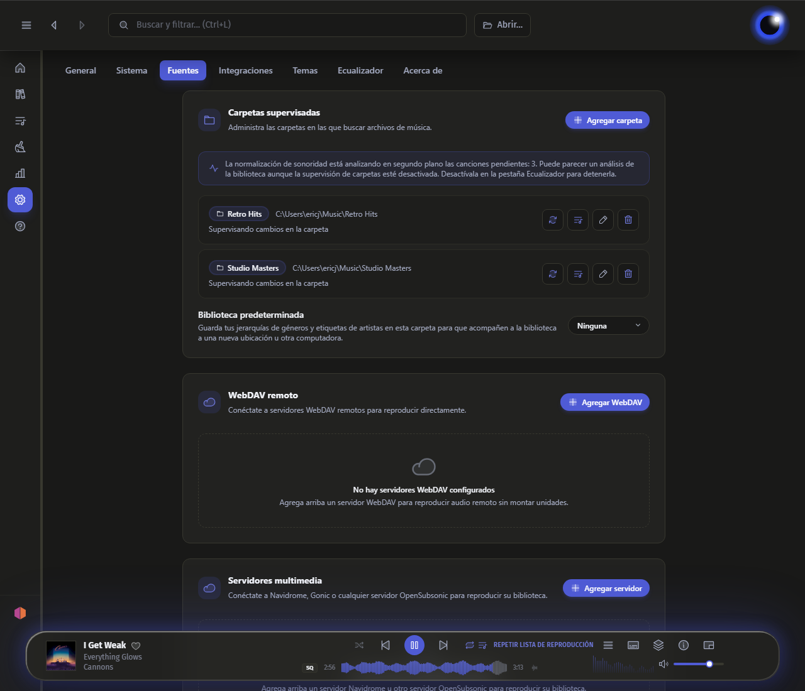
Configuración
Integraciones
Cada integración es opcional. Desactiva cualquiera para mantener esa parte de Luminous sin conexión.
•
Servicios en línea: el interruptor general, arriba a la derecha. Cámbialo a Sin conexión y Luminous no hace ninguna solicitud a servicios externos (carátulas, letras, biografías, ListenBrainz, inicio de sesión de MusicBrainz, presencia en Discord y búsqueda de actualizaciones); las letras y carátulas guardadas se siguen mostrando, y tus bibliotecas Subsonic y WebDAV siguen funcionando.
•
ListenBrainz Scrobbler: pega tu Token de usuario, haz clic en Validar y guardar y activa el scrobbling. Elige si también se envían las valoraciones. Activa o desactiva las transmisiones de «reproduciendo ahora» y pausa el scrobbling desde la ventana del perfil de MusicBrainz en la barra lateral.
•
Pausar todo el scrobbling (en la ventana del perfil de la barra lateral o en el área de notificación) detiene el envío sin desconectar. Las escuchas hechas sin conexión esperan hasta que hagas clic en Sincronizar ahora.
•
MusicBrainz Picard: Luminous encuentra Picard o te permite buscarlo, para que puedas abrir archivos en Picard.
•
Discord Rich Presence: muestra en Discord lo que estás reproduciendo. La aplicación de escritorio de Discord debe estar en ejecución.
•
fanart.tv: obtiene fotos de artistas y otro material gráfico que Luminous no encuentra en local. Agrega tu clave de API y haz clic en Validar y guardar. Sin clave, Luminous usa imágenes de Wikidata.
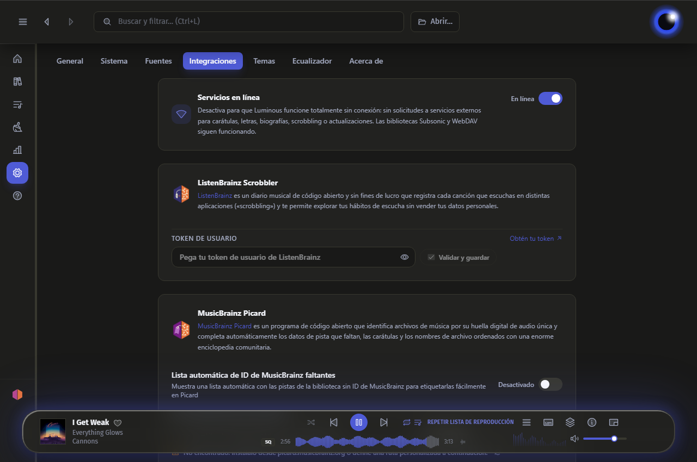
Conceptos básicos
Organizar
Cambia el nombre y la ubicación de tus archivos según sus etiquetas. No cambia nada hasta que hagas clic en Organizar música.
1
Elige un patrón: Predeterminado, Alternativo o Personalizado para escribir el tuyo. El árbol de abajo muestra una vista previa del resultado.
2
Elige un destino: la carpeta original de la biblioteca, o Personalizado... para elegir otro.
3
Elige si se mueven los archivos complementarios, si se reemplazan los espacios por guiones bajos y si se cambian las letras con acento.
4
Revisa la vista previa. Solo enumera los archivos que se van a mover, con su ubicación anterior y la nueva.
5
Haz clic en Organizar música.
•
Activa Organizar automáticamente en la parte superior derecha (o en Configuración → Fuentes) para que las pistas nuevas y las ediciones de etiquetas se renombren y muevan solas, en segundo plano.
•
Limpiar elimina canciones que faltan, carpetas vacías y entradas duplicadas.
Lo encuentras en Configuración → Ecualizador. Cada cambio se aplica al instante, incluso con la canción en marcha.
10 bandas
•
Activa Activar ecualizador y elige un ajuste preestablecido o da forma a tu propia curva.
•
Arrastra un control deslizante para realzar o atenuar su frecuencia, hasta ±20 dB.
•
Baja el Preamplificador cuando realces, para que los pasajes fuertes no se saturen.
•
Los modos de 10 bandas y paramétrico conservan por separado sus bandas, preamplificador y ajuste, por lo que cambiar de uno a otro nunca modifica el otro.
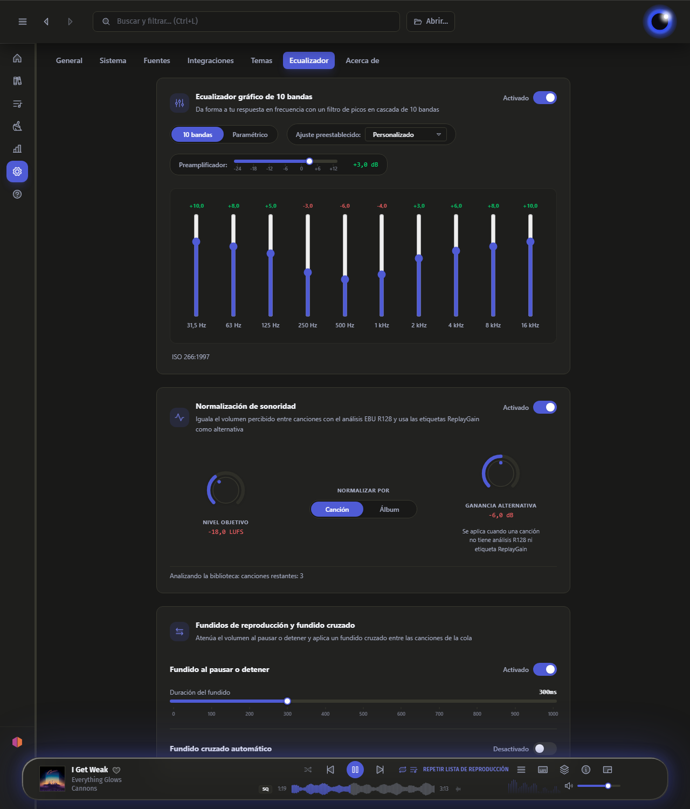
Paramétrico
•
Arrastra un nodo para fijar su frecuencia y su ganancia. Desplázate sobre él para hacerlo más ancho o más estrecho (Q).
•
Haz doble clic en el gráfico para agregar una banda, hasta 20. La tabla de abajo muestra el tipo, los valores y el interruptor de cada banda.
•
Restablecer bandas vuelve a plano.
•
El menú ⋯ junto al ajuste preestablecido contiene sus acciones:
– Importar… carga un perfil de corrección para audífonos (ver abajo).
– Exportar… guarda las bandas y el preamplificador como un archivo de Equalizer APO.
– Guardar como… conserva las bandas actuales como un ajuste propio, en Mis ajustes.
– Cambiar nombre y Eliminar administran tus propios ajustes.
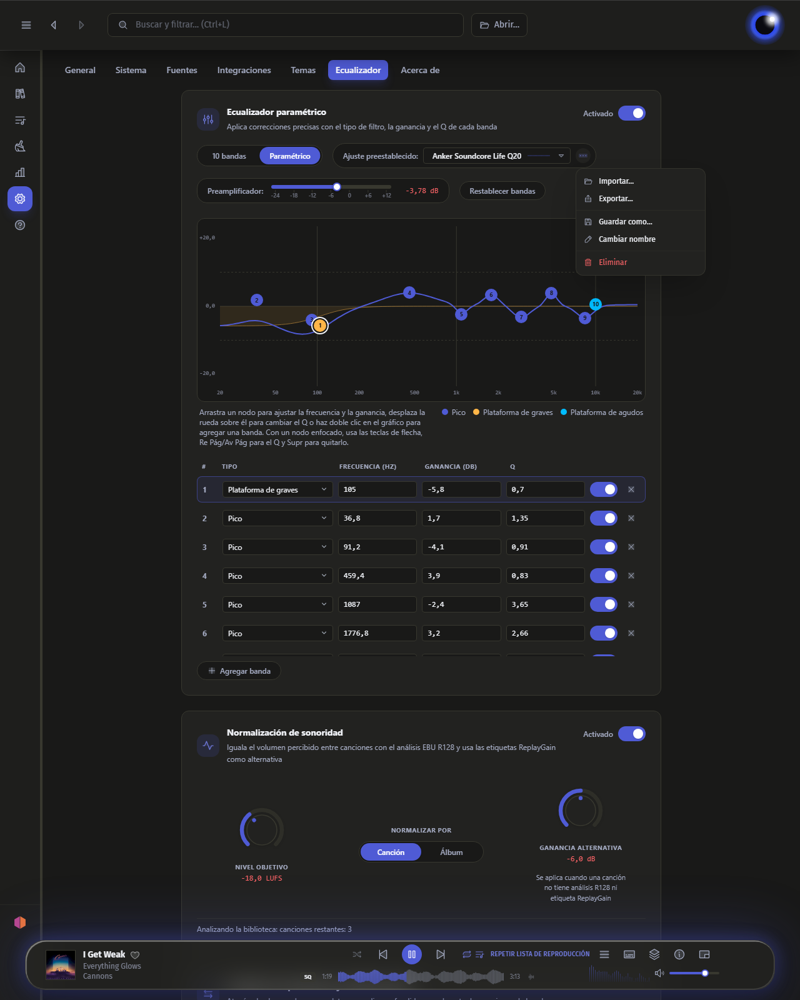
Corrige tus audífonos
•
Busca tus audífonos en AutoEq, elige EqualizerAPO ParametricEq como aplicación de ecualizador y descarga el archivo de ajustes.
•
En el modo paramétrico, elige Importar… en el menú ⋯ y luego Elegir archivo… o pega el texto.
•
El perfil se guarda en Mis ajustes y se aplica de inmediato. Si Luminous no puede reproducirlo con exactitud, indica la línea con el problema y no cambia nada.
Normalización de volumen
•
Actívala para igualar el volumen entre canciones.
•
Nivel objetivo define qué tan fuerte suena todo.
•
Normalizar porÁlbum conserva las diferencias de volumen entre las canciones de un mismo álbum.
•
Las canciones que aún no se han analizado usan sus etiquetas ReplayGain o la Ganancia alternativa.
Fundidos de reproducción y fundido cruzado
•
Fundido al pausar o detener baja el volumen poco a poco en lugar de cortarlo.
•
Fundido cruzado manual mezcla las canciones cuando pasas a la siguiente; Fundido cruzado automático las mezcla cuando una canción termina.
•
Conservar la reproducción sin pausas en el mismo álbum mantiene continuos los álbumes en vivo y los conceptuales.
Configuración
Temas de la interfaz
Elige un tema
•
Luminous colorea toda la aplicación a partir de la carátula del álbum en reproducción. ¿Te gusta un resultado? Guárdalo como tema personalizado.
•
Sistema sigue tu configuración de modo claro u oscuro. Usa los botones Claro, Oscuro y Sistema de su tarjeta para fijar uno.
•
Haz clic en cualquier tema predefinido para activarlo.
Temas complementarios para colaboradores (solo en la versión de Microsoft Store)
•
Temas adicionales con su propio arte y animación. Haz clic en el botón de la tarjeta (Comprar por…, Obtener gratis u Obtener) para agregar uno y luego haz clic en la tarjeta para usarlo.
•
¿No ves tu compra? Haz clic en Comprobar compras.
•
Los temas complementarios conservan sus propios colores; no se pueden editar.
Crea el tuyo
•
Abre el Generador de temas personalizados para definir tus propios colores.
•
Usa Importar tema para agregar un tema desde un archivo. Cada tarjeta de tema personalizado se puede editar, exportar o eliminar.
Movimiento
•
Si tienes activada la opción de reducir el movimiento del sistema, las animaciones deslizantes se convierten en suaves fundidos.
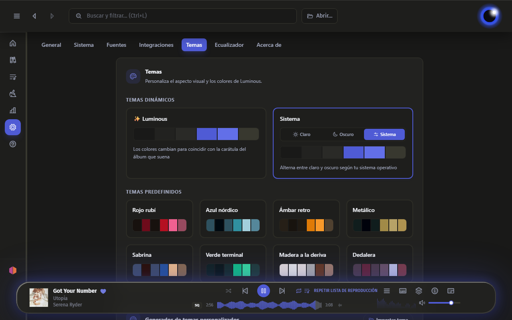
Consejos y trucos
Atajos de teclado
Reproducción
Espacio
Reproducir / pausar
←
Pista anterior
→
Pista siguiente
↑
Subir el volumen
↓
Bajar el volumen
Re Pág
Retroceder 10 s
Av Pág
Avanzar 10 s
Navegación
CtrlL
Ir a la barra de búsqueda
Esc
Cerrar el menú de búsqueda
CtrlO
Abrir canción
Ctrl[
Atrás
Ctrl]
Adelante
CtrlA
Seleccionar todo en la vista de lista actual
Diseño y vista
Ctrl1
Mostrar u ocultar la barra lateral izquierda
Ctrl2
Activar o desactivar el modo inmersivo
Ctrl3oCtrlI
Mostrar u ocultar el panel de información
CtrlM
Activar o desactivar el minirreproductor
Ctrl,
Abrir Configuración
Ctrl/
Mostrar esta lista
Los botones laterales del mouse y las teclas de atrás y adelante del navegador también recorren el historial. Los botones multimedia de tu teclado o dispositivo también controlan la reproducción.
Configuración
Acerca de y créditos
El código fuente está en GitHub, junto con los créditos de cada biblioteca que usa Luminous y la licencia con la que se comparte.
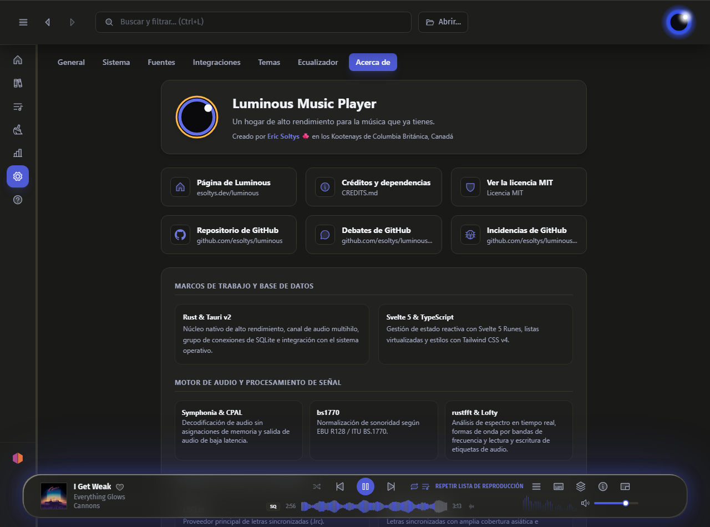
Consejos y trucos
Menús contextuales y selección múltiple
•
Haz clic con el botón derecho en una canción para ver Reproducir, Agregar a la lista de reproducción, Ir al artista, Ir al álbum, Editar etiquetas y más.
•
Haz clic con el botón derecho en un álbum para ver Reproducir álbum, Agregar a la cola, Editar la información del álbum, Abrir en Picard, Tarjeta para compartir..., Anclar a Inicio y No incluir en las estadísticas.
•
Mayús + clic selecciona un rango, Ctrl + clic agrega filas, y CtrlA selecciona todo en la lista.
•
Con canciones seleccionadas, una barra de herramientas ofrece Reproducir selección, Agregar a la lista de reproducción y Borrar selección.